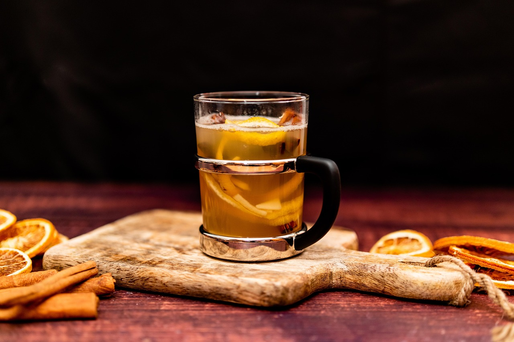
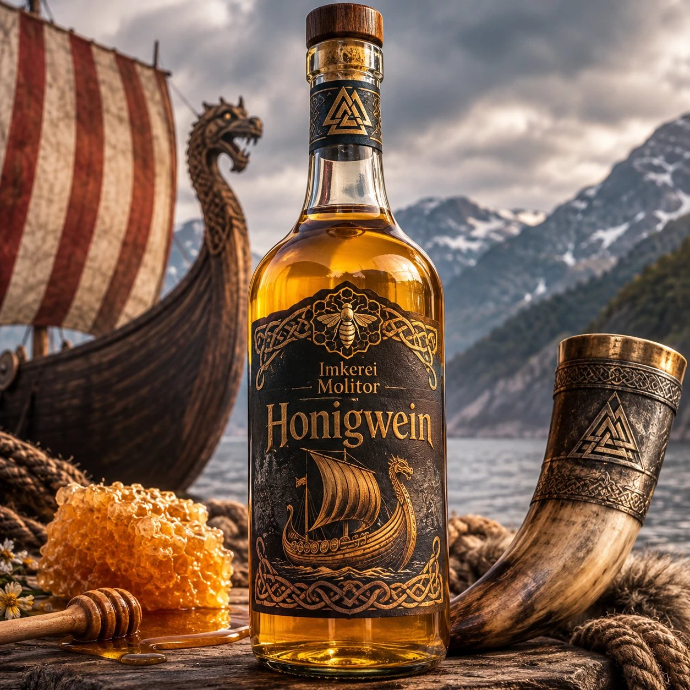

Ratgeber
Ist Honig vom Imker gesund? Ratgeber rund um Honig
Wissen, Rezepte und Ideen aus unserer Imkerei – rund um Honig, Met und Bienenwachs.

Ist Honig vom Imker gesund?
Was wirklich im Honig steckt – und warum Babys keinen Honig bekommen.
4 Min. Lesezeit · Jetzt lesen →
Heißer Met zu Weihnachten
Met warm oder kalt? Unser Rezept mit Zimt und Orange.
4 Min. Lesezeit · Jetzt lesen →
Met – Das Getränk der Wikinger
Geschichte, Geschmack und Genuss von Met.
5 Min. Lesezeit · Jetzt lesen →
Wie entsteht Waldhonig?
Honigtau, Läuse und Bienen: der Weg vom Baum ins Glas.
4 Min. Lesezeit · Jetzt lesen →
DIY: Honig-Kerzen aus Bienenwachsplatten
Ganz einfach für Kinder, ohne heißes Wachs.
3 Min. Lesezeit · Jetzt lesen →
Viking Cake – Honigkuchen-Rezept
Unser Rezeptplakat zum Nachbacken und Ausdrucken.
Rezept · Jetzt ansehen →